UTB-SOI NMOSFET에서 게이트 길이 축소가 단채널 효과(SCE)를 얼마나 악화시키는지 확인하고, 게이트 유전체의 물리 두께는 그대로 둔 채 소재만 High-K로 바꿔 이를 얼마나 완화할 수 있는지를 DIBL 중심으로 정량 평가한 TCAD 시뮬레이션 프로젝트입니다. (숭실대학교 반도체집적공정 팀 프로젝트, 4인, 2026-1학기)
01프로젝트 요약
질문. 게이트 길이를 줄이면 SCE가 얼마나 나빠지고, 유전체 물리 두께를 그대로 둔 채 소재만 High-K로 바꾸면 그 손실을 얼마나 되찾을 수 있는가?
접근. 같은 UTB-SOI NMOSFET 구조에서 (1) 유전체를 SiO2로 고정하고 Lg를 100 nm → 50 nm로 줄여 SCE 악화를 확인한 뒤, (2) Lg = 50 nm에서 유전체를 SiO2 → Al2O3 → HfO2로 바꿔 완화 정도를 정량화했습니다. 모든 조건에서 Vd = 0.05 V(선형)와 1.0 V(포화)의 Id–Vg를 계산해 DIBL을 구했습니다.
| 비교 조건 | DIBL (mV/V) | 해석 |
|---|---|---|
| SiO2, Lg 100 nm | 26.9 | 기준 소자 |
| SiO2, Lg 50 nm | 76.4 | 게이트 길이 축소로 약 2.8배 악화 |
| Al2O3, Lg 50 nm | 28.1 | SiO2 50 nm 대비 63% 감소 (SiO2 100 nm 수준으로 회복) |
| HfO2, Lg 50 nm | 10.3 | SiO2 50 nm 대비 87% 감소 (SiO2 100 nm보다 낮음) |
DIBL은 Icrit = 10−7 A/µm 기준 정전류 Vth로 추출했습니다.
- 서브문턱 스윙(SS, Vd = 0.05 V, Lg = 50 nm)은 SiO2 71.5 → Al2O3 65.4 → HfO2 61.5 mV/dec로 이상값(60 mV/dec)에 가까워졌습니다.
- 유전율이 높은 소재일수록 DIBL이 작았고, 이 순서(SiO2 > Al2O3 > HfO2)는 이론적 기대와 정성적으로 일치합니다.
- 다만 이번 실험에서는 유전체와 함께 게이트 전극(Poly-Si → TiN)도 바뀌어 두 효과를 분리하지 못했습니다. 08 한계 항목을 참고하세요.
02배경과 문제 정의
게이트 길이(Lg)를 줄이면 집적도가 높아지고, 채널을 지나는 캐리어의 이동 거리가 짧아져 속도가 빨라지며, 더 낮은 전압에서 구동할 수 있습니다. 그러나 Lg가 공핍 영역 폭과 비슷한 수준으로 짧아지면 게이트가 채널을 지배하는 힘이 약해지고 드레인 전기장이 소스 쪽 전위 장벽에 영향을 미칩니다. 그 결과 문턱전압이 낮아지고(Vth roll-off), 서브문턱 특성이 나빠지며(SS 증가), 누설전류가 늘고, DIBL이 커집니다. 이를 통틀어 단채널 효과(Short Channel Effect, SCE)라고 합니다.
집적도·속도·전력의 이점 때문에 Lg 축소는 피할 수 없으므로, 실제 과제는 “Lg는 줄이되 SCE는 다른 수단으로 억제하는 것”입니다. 본 프로젝트는 그 수단 중 하나인 High-K 게이트 유전체의 효과를, 유전체 물리 두께를 바꾸지 않고 소재만 바꾸는 방식으로 검증했습니다.
03이론적 배경
DIBL (Drain-Induced Barrier Lowering)
드레인 전압이 높아지면 드레인 전기장이 채널로 침투해 소스–채널 사이의 전위 장벽이 낮아지고, 같은 게이트 전압에서 더 많은 전자가 넘어옵니다. 이는 문턱전압이 낮아지는 것으로 관측됩니다.
본 프로젝트에서 Vd,lin = 0.05 V, Vd,sat = 1.0 V이므로 분모는 0.95 V입니다. 값이 작을수록 게이트 제어력이 우수합니다.
서브문턱 스윙 (SS)
Id를 10배 늘리는 데 필요한 게이트 전압(mV/dec)입니다. 상온 이론 하한은 약 60 mV/dec이며, 게이트 산화막 용량 Cox가 클수록(High-K일수록) Cd/Cox 항이 줄어 이상값에 가까워집니다.
문턱전압 정의: gm 최대점 vs 정전류
| 방법 | 정의 | 특징 |
|---|---|---|
| Vtgm | gm(= dId/dVg)이 최대인 점에서 Id–Vg 접선이 Vg축과 만나는 전압 | 한 곡선만으로 추출 가능. 고Vd에서 이동도 저하·직렬저항의 영향을 받기 쉬움 |
| Vth,CC | Id가 기준 전류 Icrit에 도달하는 Vg | DIBL 추출의 표준 방식. 본 프로젝트는 Icrit = 10−7 A/µm |
UTB-SOI 구조가 SCE에 유리한 이유
UTB-SOI(Ultra-Thin-Body Silicon-On-Insulator)는 극박막 실리콘 채널 아래에 매립 산화막(BOX)을 둔 구조입니다.
- 완전 공핍. 채널 도핑 3×1015 cm−3에서 최대 공핍폭은 약 0.5 µm(ni = 1010 cm−3 가정)로, 5 nm 박막은 항상 완전 공핍됩니다. 드레인 전기장이 침투할 중성 영역이 없습니다.
- 누설 경로 차단. BOX가 채널과 기판을 절연해 기판 쪽 드레인–소스 누설 경로를 끊습니다.
- 자연 길이(natural length). 정전기적 제어의 특성 길이 λ ∝ √[ (εSi/εox)·tSi·tox ] 는 박막이 얇을수록, 산화막 유전율이 높을수록 작아집니다. λ가 작으면 더 짧은 Lg까지 SCE가 억제됩니다.
High-K와 EOT
같은 물리 두께에서 유전율이 높으면 게이트 용량이 커져 채널 제어가 강해집니다. 반대로 같은 용량(EOT)을 유지한다면 물리 두께를 늘려 게이트 터널링을 줄일 수 있습니다.
| 소재 | 비유전율 k (문헌 대표값) | tphys = 2.4 nm 기준 이론 EOT |
|---|---|---|
| SiO2 | 약 3.9 | 2.4 nm |
| Al2O3 | 약 9 | 약 1.0 nm |
| HfO2 | 약 22 ~ 25 | 약 0.4 nm |
위 표는 문헌 대표값에 근거한 이론 예시이며, 시뮬레이션에 실제 적용된 유전율은 08 한계 항목에서 다룹니다.
04시뮬레이션 설계
워크플로우
Lg · HighK · Vd→SProcess
구조·도핑 생성→SDevice
Vd 인가 후 Vg 스윕→SVisual
곡선·지표 추출→DIBL
Vth 비교
소자 구조
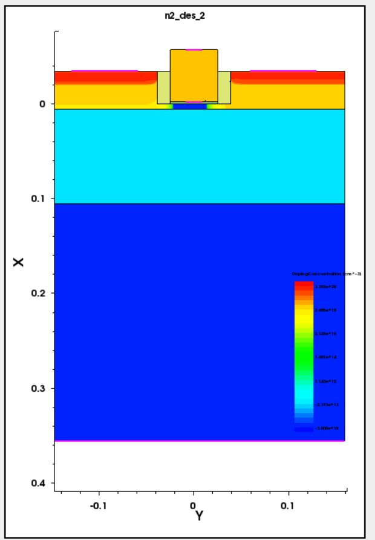
| 구성 요소 | 치수 / 조건 | 역할 |
|---|---|---|
| 게이트 전극 | 두께 55 nm. SiO2 조건은 Poly-Si, High-K 조건은 TiN | 채널 전위 제어 |
| 게이트 유전체 | 물리 두께 2.4 nm 고정. SiO2 / Al2O3 / HfO2 | 게이트–채널 절연, 소재만 변수 |
| 스페이서 | Nitride, 폭 14 nm | 게이트와 S/D 분리 |
| Raised S/D | 높이 35 nm, 바깥쪽 연장 120 nm. P (6 keV, 1.8×1014) + As (2 keV, 3.0×1014) | 접촉 저항 감소 |
| Si 박막 채널 (ST) | 5 nm (0.005 µm), p형 B 3×1015 cm−3 | 전류 통로, 완전 공핍 |
| BOX | SiO2 100 nm | 채널–기판 절연 |
| Si 기판 | 250 nm, p형 | 지지 기판 |
| 활성화 어닐 | 750 °C, 0.015 s | 저열예산 활성화 |
실험 변수
| 변수 | 값 | 비고 |
|---|---|---|
| 게이트 길이 Lg | 100 nm, 50 nm | 스케일링 효과 확인 |
| 게이트 유전체 | SiO2 (Oxide), Al2O3, HfO2 | 소재만 변경 |
| 드레인 전압 Vd | 0.05 V, 1.0 V | DIBL 계산용 (선형/포화) |
| 고정 조건 | ST = 5 nm, tphys = 2.4 nm, 채널 도핑, S/D 공정, 스페이서 | 변인 통제 |
총 2 (Lg) × 3 (유전체) × 2 (Vd) = 12 조건
물리 모델 (SDevice)
| 항목 | 설정 |
|---|---|
| 지배 방정식 | Poisson + 전자·정공 연속 방정식 (Drift-Diffusion), Coupled 해법 |
| 통계 | Fermi–Dirac |
| 밴드갭 협소화 | OldSlotboom |
| 이동도 | PhuMob (도핑 의존) + Enormal (수직 전계) + HighFieldSaturation |
| 재결합 | SRH (도핑 의존) |
| 미포함 | 양자 구속, 게이트 터널링, 밴드간 터널링, Halo·LDD |
설계 결정과 근거
| 결정 | 근거 |
|---|---|
| ST = 5 nm | 완전 공핍을 확보해 구조 자체로 SCE를 억제하는 UTB 조건 |
| 유전체 물리 두께 고정 | 유전율 변화의 순수 효과만 비교하기 위한 변인 통제 |
| Halo / LDD 미적용 | 다른 SCE 억제 기법이 유전체 효과를 가리지 않도록 배제 |
| 낮은 채널 도핑 (3×1015) | 박막·BOX가 SCE를 잡으므로 채널은 저농도로 유지 |
| GateWF 미지정 | 게이트 전극 재료의 기본 처리에 맡김 (08 한계 항목 참고) |
추출 지표 정의
| 지표 | 정의 | 좋은 방향 |
|---|---|---|
| Vtgm | gm 최대점 기반 문턱전압 | 비교용 |
| Vth,CC | Id = Icrit(10−7 A/µm)가 되는 Vg | DIBL 계산에 사용 |
| SS | Id를 10배 올리는 데 필요한 Vg (mV/dec) | 60에 가까울수록 |
| gm | dId/dVg, 게이트의 전류 제어 효율 | 클수록 |
| Idmax | Vg = 1.0 V에서의 최대 드레인 전류 | 클수록 |
| Ion | ON 상태 전류. 본 스윕에서는 Vg = 1.0 V에서의 Id | 클수록 |
| Ioff | OFF 상태 전류. Vth 기준 Vg = Vtgm − 0.3 V에서의 Id | 작을수록 |
| Ion/Ioff | 스위칭 품질 (ON 전류 ÷ OFF 전류) | 클수록 |
| DIBL | 03 이론 참고 | 작을수록 |
05코드 구성과 전체 코드
세 스크립트는 Sentaurus Workbench(SWB)에서 @Lg@, @HighK@, @Vd@, @node@ 변수를 받아 동작합니다.
| 파일 | 역할 | 핵심 동작 |
|---|---|---|
| sprocess.cmd | 구조·도핑 생성 | @HighK@에 따라 유전체·게이트 재료를 분기하고, Lg에 따라 좌표를 계산해 영역·메시·S/D 임플란트·접점을 정의 |
| sdevice.cmd | 전기 특성 계산 | 드레인을 @Vd@까지 올린 뒤 게이트를 0 → 1.0 V로 스윕하여 IdVg_*.plt 생성 |
| svisual.tcl | 그래프·지표 추출 | Id–Vg 곡선 생성, Vtgm·SS·gm·Idmax·Vth,CC 추출, Vth 기준 Ion/Ioff 계산 |
SProcess에서 High-K를 다루는 방식. mater add로 HfO2, TiN, 그리고 Al2O3용 내부 재료명 hkA를 등록하고, @HighK@ 값에 따라 게이트 유전체 영역과 게이트 전극 영역에 배치할 재료를 선택합니다. 유전체 두께(tDiel = 0.0024 µm)는 모든 조건에서 동일합니다. Sentaurus T-2022.03의 SDevice가 Al2O3 재료명을 직접 인식하지 못해 별도 이름으로 등록하는 방식을 택했습니다.
SVisual의 Ion/Ioff. 소자마다 Vth가 다르므로 절대 전압(Vg = 0 / 1.0 V) 대신 각 소자의 Vtgm을 기준으로 Ioff는 Vtgm − 0.3 V, Ion은 Vtgm + 0.7 V에서 읽습니다. 스윕 상한이 1.0 V이므로 Vtgm + 0.7 V가 범위를 넘는 경우 가장 가까운 점(= Vg 1.0 V)의 값이 사용됩니다.
sprocess.cmd
#header
set chLen @Lg@
set siThk 0.005
set gdMat "@HighK@"
mater add name=HfO2 new.like=Oxide
mater add name=TiN new.like=Aluminum
mater add name=hkA new.like=Oxide
set tDiel 0.0024
set tGate 0.055
set tSpcr 0.014
set tRsd 0.035
set lExt 0.120
set tBox 0.100
set tSub 0.250
set pBody 3e15
if {($gdMat == "Oxide") || ($gdMat == "SiO2")} {
set dielReg Oxide
set gateReg PolySilicon
} elseif {$gdMat == "HfO2"} {
set dielReg HfO2
set gateReg TiN
} elseif {$gdMat == "Al2O3"} {
set dielReg hkA
set gateReg TiN
} else {
puts "STOP invalid HighK $gdMat"
exit 1
}
#endheader
set gHalf [expr 0.5*$chLen]
set px0 [expr -($tDiel + $tGate)]
set px1 [expr -$tDiel]
set px2 0.0
set px3 $siThk
set px4 [expr $siThk + $tBox]
set px5 [expr $siThk + $tBox + $tSub]
set pxR [expr -$tRsd]
set py0 [expr -$gHalf]
set py1 [expr $gHalf]
set pyS [expr $py0 - $tSpcr]
set pyD [expr $py1 + $tSpcr]
set pyS2 [expr $pyS - $lExt]
set pyD2 [expr $pyD + $lExt]
set cS0 [expr $pyS2 + 0.030]
set cS1 [expr $pyS - 0.020]
set cD0 [expr $pyD + 0.020]
set cD1 [expr $pyD2 - 0.030]
set cG0 [expr -0.35*$gHalf]
set cG1 [expr 0.35*$gHalf]
line x location=$px0 spacing=0.0030 tag=L_gtop
line x location=$pxR spacing=0.0012 tag=L_rtop
line x location=$px1 spacing=0.0004 tag=L_dtop
line x location=$px2 spacing=0.0004 tag=L_sitop
line x location=$px3 spacing=0.0007 tag=L_sibot
line x location=$px4 spacing=0.0040 tag=L_boxbot
line x location=$px5 spacing=0.0300 tag=L_subbot
line y location=$pyS2 spacing=0.004 tag=L_sout
line y location=$pyS spacing=0.001 tag=L_sin
line y location=$py0 spacing=0.001 tag=L_gl
line y location=0.0 spacing=0.001 tag=L_mid
line y location=$py1 spacing=0.001 tag=L_gr
line y location=$pyD spacing=0.001 tag=L_din
line y location=$pyD2 spacing=0.004 tag=L_dout
region Silicon \
xlo=L_sitop xhi=L_sibot \
ylo=L_sout yhi=L_dout
region Oxide \
xlo=L_sibot xhi=L_boxbot \
ylo=L_sout yhi=L_dout
region Silicon \
xlo=L_boxbot xhi=L_subbot \
ylo=L_sout yhi=L_dout
region $dielReg \
xlo=L_dtop xhi=L_sitop \
ylo=L_gl yhi=L_gr
region $gateReg \
xlo=L_gtop xhi=L_dtop \
ylo=L_gl yhi=L_gr
region Nitride \
xlo=L_rtop xhi=L_sitop \
ylo=L_sin yhi=L_gl
region Nitride \
xlo=L_rtop xhi=L_sitop \
ylo=L_gr yhi=L_din
region Silicon \
xlo=L_rtop xhi=L_sitop \
ylo=L_sout yhi=L_sin
region Silicon \
xlo=L_rtop xhi=L_sitop \
ylo=L_din yhi=L_dout
init wafer.orient=100 field=Boron concentration=$pBody
AdvancedCalibration
pdbSet Silicon Dopant DiffModel ChargedFermi
pdbSet Mechanics EtchDepoRelax 0
refinebox min.normal.size=0.0004 normal.growth.ratio=1.4
refinebox add \
min="$px0 $py0" max="$px3 $py1" \
xrefine="0.0004 0.0008 0.0015" \
yrefine="0.0004 0.0008 0.0015"
refinebox add \
min="$pxR $pyS2" max="$px4 $pyD2" \
xrefine="0.0008 0.0015 0.0040" \
yrefine="0.0010 0.0020 0.0040"
grid set.Delaunay.type=boxmethod
grid remesh
mask name=mSrc left=$pyS2 right=$pyS
mask name=mDrn left=$pyD right=$pyD2
implant Phosphorus energy=6 dose=1.8e14 tilt=0 rotation=0 mask=mSrc
implant Phosphorus energy=6 dose=1.8e14 tilt=0 rotation=0 mask=mDrn
implant Arsenic energy=2 dose=3.0e14 tilt=0 rotation=0 mask=mSrc
implant Arsenic energy=2 dose=3.0e14 tilt=0 rotation=0 mask=mDrn
diffuse time=0.015<s> temperature=750
grid set.Delaunay.type=boxmethod
refinebox add \
min="$px0 $py0" max="$px3 $py1" \
xrefine="0.0004 0.0008 0.0015" \
yrefine="0.0004 0.0008 0.0015"
refinebox add \
min="$pxR $pyS2" max="$px3 $pyD2" \
xrefine="0.0008 0.0015 0.0040" \
yrefine="0.0010 0.0020 0.0040"
grid remesh
contact name=gate box $gateReg \
xlo=$px0 xhi=$px1 \
ylo=$cG0 yhi=$cG1
contact name=source box Silicon \
xlo=$pxR xhi=$px2 \
ylo=$cS0 yhi=$cS1
contact name=drain box Silicon \
xlo=$pxR xhi=$px2 \
ylo=$cD0 yhi=$cD1
contact name=substrate bottom
struct tdr=n@node@ !Gas !interfacessdevice.cmd
File {
Grid = "@tdr@"
Plot = "@tdrdat@"
Current = "@plot@"
Output = "@log@"
}
Electrode {
{ Name="source" Voltage=0.0 }
{ Name="drain" Voltage=0.0 }
{ Name="gate" Voltage=0.0 }
{ Name="substrate" Voltage=0.0 }
}
Physics {
Fermi
EffectiveIntrinsicDensity( OldSlotboom )
}
Physics (Material="Silicon") {
Mobility(
PhuMob
Enormal
HighFieldSaturation
)
Recombination(
SRH( DopingDependence )
)
}
Plot {
eDensity hDensity
eCurrent hCurrent
ElectricField
Potential
SpaceCharge
Doping
DonorConcentration
AcceptorConcentration
eMobility hMobility
SRHRecombination
}
Math {
Extrapolate
RelErrControl
Digits=5
Iterations=30
NotDamped=50
Method=ILS
ExitOnFailure
}
Solve {
Coupled(Iterations=100) { Poisson }
Coupled { Poisson Electron Hole }
Quasistationary(
InitialStep=0.01
Increment=1.4
MinStep=1e-6
MaxStep=0.05
Goal { Name="drain" Voltage=@Vd@ }
) {
Coupled { Poisson Electron Hole }
}
NewCurrentPrefix="IdVg_"
Quasistationary(
InitialStep=0.005
Increment=1.35
MinStep=1e-6
MaxStep=0.025
Goal { Name="gate" Voltage=1.0 }
) {
Coupled { Poisson Electron Hole }
}
}svisual.tcl
#setdep @node|sdevice@
load_library extract
set nd @node|sdevice@
load_file "IdVg_n@node|sdevice@_des.plt" -name DAT($nd)
if {[llength [list_plots Plot_IdVg]]==0} {
create_plot -1d -name Plot_IdVg
set_plot_prop -hide_title -show_legend
set_axis_prop -title_font_size 16 -scale_font_size 14
set_axis_prop -axis x \
-title {Gate Voltage [V]} -type linear
set_axis_prop -axis y \
-title {Drain Current [A/<greek>m</greek>m]} -type log
set_legend_prop -label_font_size 14
}
select_plots Plot_IdVg
create_curve -name IV($nd) -dataset DAT($nd) \
-axisX "gate OuterVoltage" \
-axisY "drain TotalCurrent"
if {[info exists runVisualizerNodesTogether]} {
set_curve_prop IV($nd) \
-label "HighK=@HighK@, Lg=@Lg@um, Vd=@Vd@V" \
-color $color -line_style $line -line_width 3
} else {
set_curve_prop IV($nd) \
-label "HighK=@HighK@, Lg=@Lg@um, Vd=@Vd@V" \
-line_width 3
}
set vG [get_variable_data "gate OuterVoltage" -dataset DAT($nd)]
set iRaw [get_variable_data "drain TotalCurrent" -dataset DAT($nd)]
ext::AbsList -out iD -x $iRaw
proc pickAt {xs ys target} {
set keepY [lindex $ys 0]
set keepD [expr {abs([lindex $xs 0] - $target)}]
set m [llength $xs]
for {set j 1} {$j < $m} {incr j} {
set cx [lindex $xs $j]
set cy [lindex $ys $j]
set cd [expr {abs($cx - $target)}]
if {$cd < $keepD} {
set keepD $cd
set keepY $cy
}
}
return $keepY
}
ext::ExtractVtgm -out Vtgm -name Vtgm \
-v $vG -i $iD
ext::ExtractExtremum -out Idmax -name Idmax \
-x $vG -y $iD -type max
ext::ExtractSS -out SS -name SS \
-v $vG -i $iD -vo 0.01
ext::ExtractGm -out gm -name gm \
-v $vG -i $iD
set offDelta 0.3
set onDelta 0.7
set vOff [expr {$Vtgm - $offDelta}]
set vOn [expr {$Vtgm + $onDelta}]
set Ioff [pickAt $vG $iD $vOff]
set Ion [pickAt $vG $iD $vOn]
if {$Ioff > 0.0} {
set rIonIoff [expr {$Ion / $Ioff}]
} else {
set rIonIoff 0.0
}
puts "DOE: Vth_used $Vtgm"
puts "DOE: Vg_off $vOff"
puts "DOE: Vg_on $vOn"
puts "DOE: Ion $Ion"
puts "DOE: Ioff $Ioff"
puts "DOE: IonIoff $rIonIoff"
proc vthByCC {xv yv itgt} {
set cnt [llength $xv]
for {set k 1} {$k < $cnt} {incr k} {
set ax [lindex $xv [expr {$k-1}]]
set bx [lindex $xv $k]
set ay [lindex $yv [expr {$k-1}]]
set by [lindex $yv $k]
if {($ay <= $itgt && $by >= $itgt) || \
($ay >= $itgt && $by <= $itgt)} {
if {$ay <= 0.0 || $by <= 0.0} {
return [expr {$ax + ($itgt-$ay)*($bx-$ax)/($by-$ay)}]
} else {
set lay [expr {log($ay)/log(10.0)}]
set lby [expr {log($by)/log(10.0)}]
set lit [expr {log($itgt)/log(10.0)}]
return [expr {$ax + ($lit-$lay)*($bx-$ax)/($lby-$lay)}]
}
}
}
return -99
}
set Icrit 1e-7
set VthCC [vthByCC $vG $iD $Icrit]
puts "DOE: VthCC $VthCC"
puts "DOE: Icrit $Icrit"06결과와 분석
6.1 소자 구조 (TDR, Vd = 0.05 V)
구조는 Vd와 무관합니다. 게이트 전극·유전체 재료와 Lg만 다릅니다. 이미지를 누르면 원본이 열립니다.
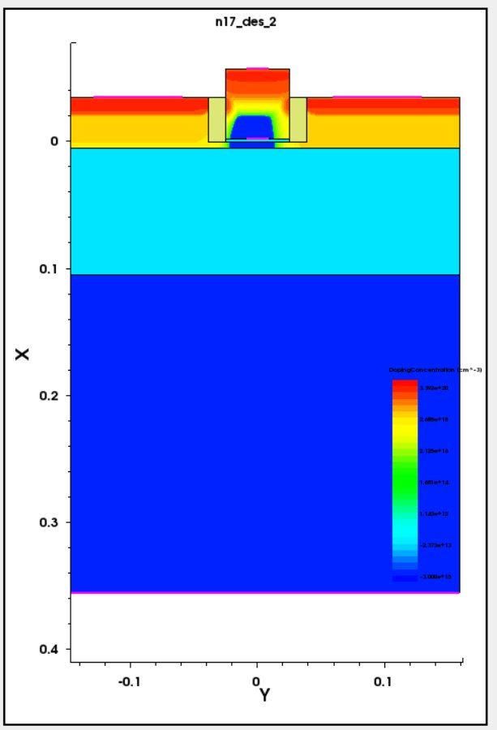
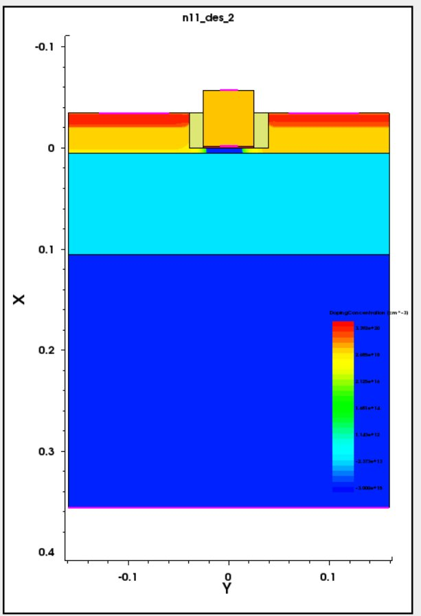
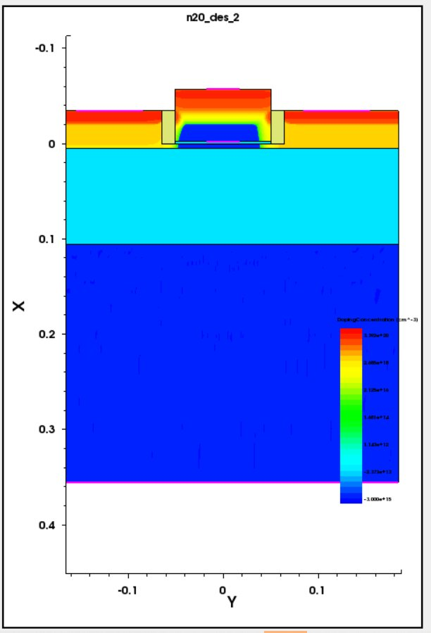
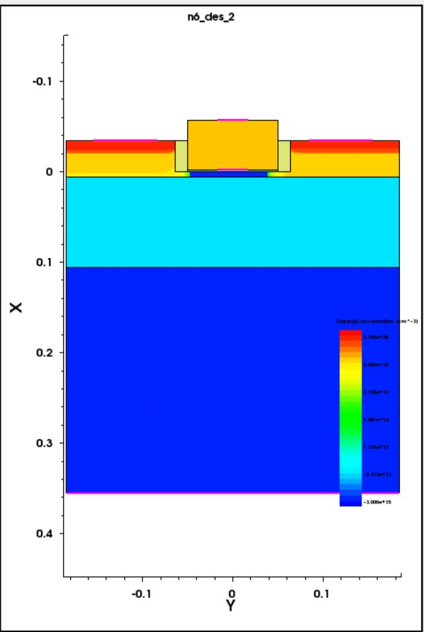
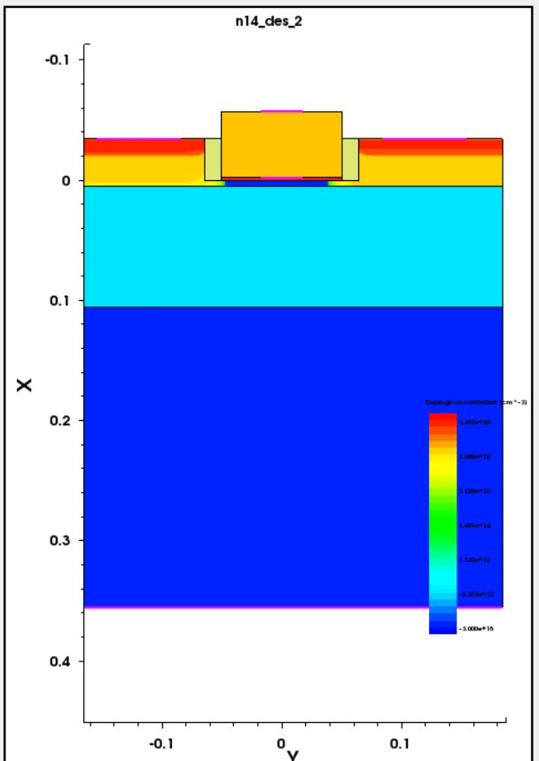
Lg가 절반으로 줄면 소스와 드레인의 N+ 영역이 채널을 사이에 두고 그만큼 가까워져, 드레인 전기장이 소스 쪽 장벽에 미치기 쉬운 구조가 됩니다.
6.2 Id–Vg 특성 (빨강: Vd = 0.05 V, 파랑: Vd = 1.0 V)
두 곡선이 가로로 벌어진 정도가 곧 DIBL입니다.
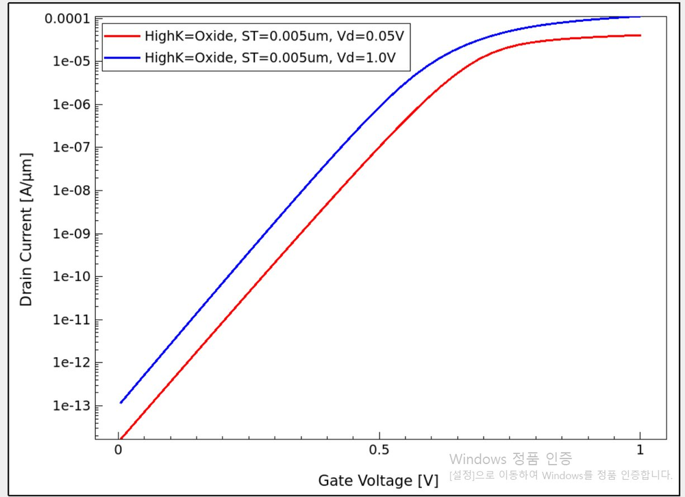
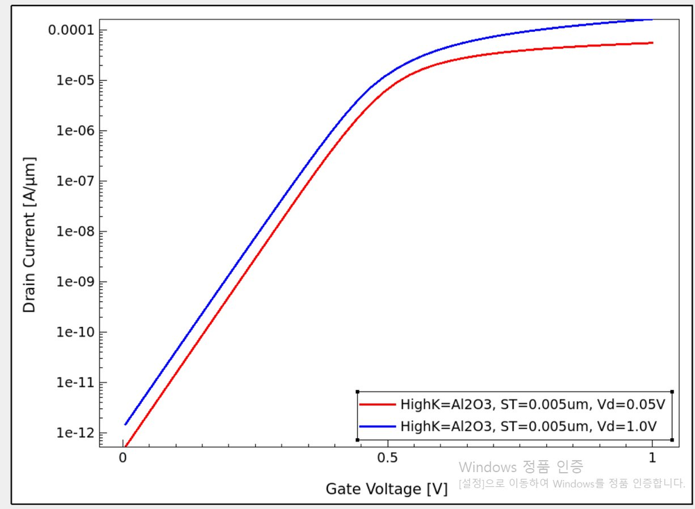
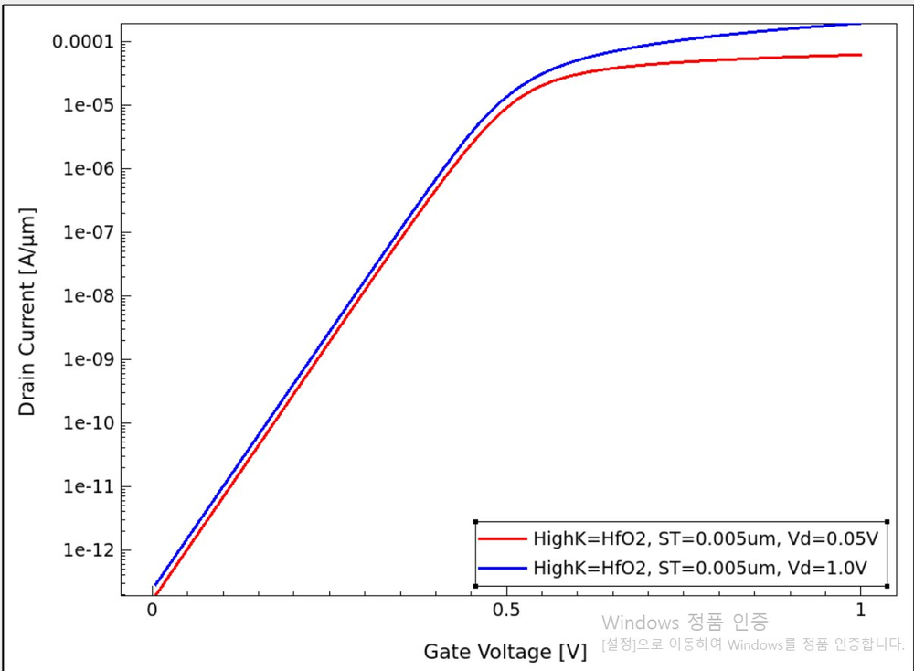
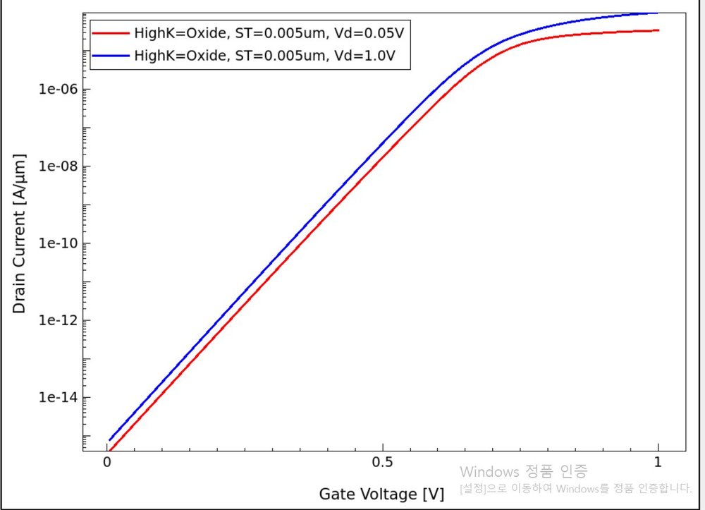
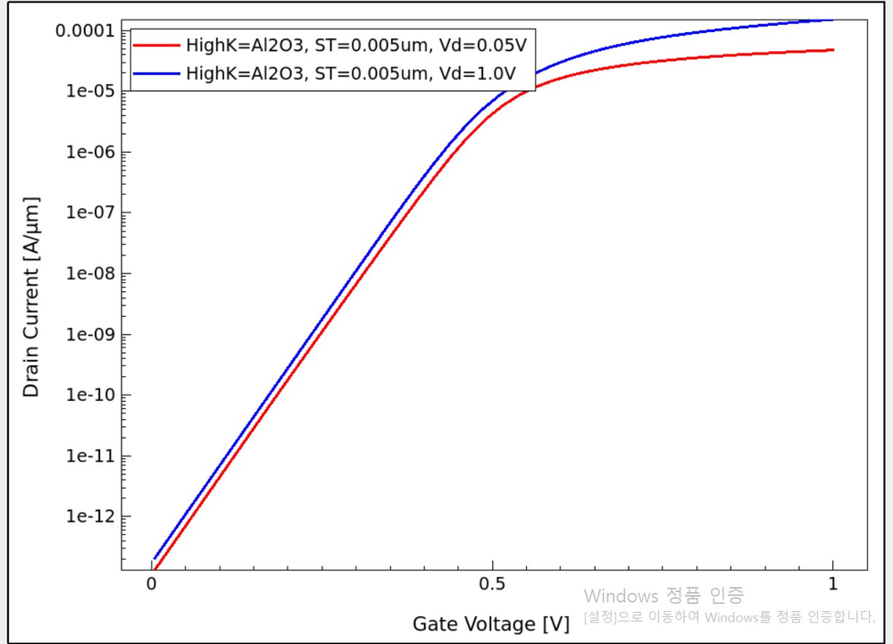
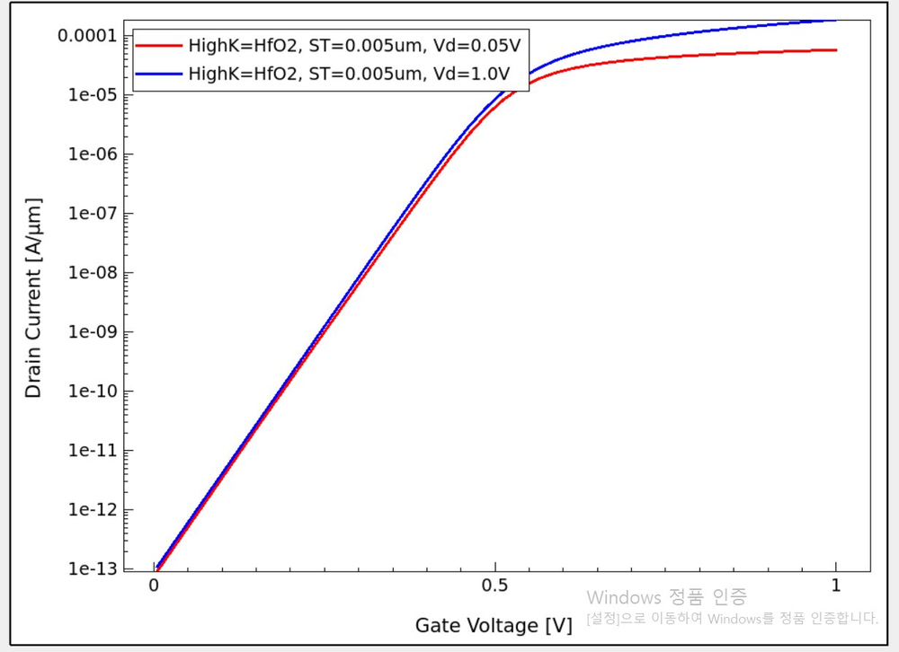
- SiO2, 50 nm는 두 곡선이 크게 벌어져 있어 드레인 전압에 따른 Vth 변화가 가장 큽니다.
- Al2O3는 간격이 좁아지고, HfO2는 subthreshold 구간에서 두 곡선이 거의 겹칩니다.
6.3 1단계: SiO2에서 Lg 축소의 영향 (SCE 악화 확인)
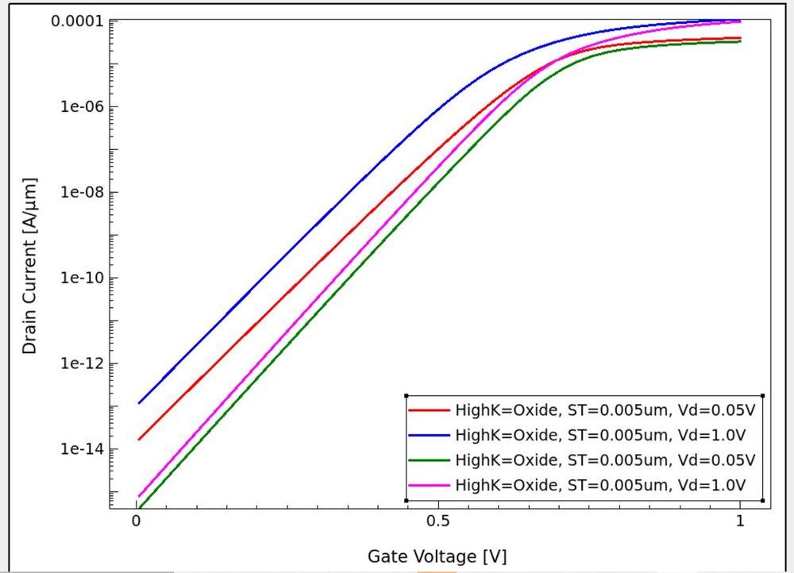
| 지표 (SiO2) | Lg 100 nm | Lg 50 nm | 변화 |
|---|---|---|---|
| DIBL (Vth,CC) | 26.9 mV/V | 76.4 mV/V | 2.8배 증가 |
| Vth,CC (Vd = 0.05 V) | 0.553 V | 0.499 V | 54 mV 하락 (Vth roll-off) |
| SS (Vd = 0.05 V) | 63.9 mV/dec | 71.5 mV/dec | 이상값에서 멀어짐 |
| Vg = 0 V 누설 (Vd = 1.0 V) | 7.85×10−16 A/µm | 1.18×10−13 A/µm | 약 150배 증가 |
Lg를 절반으로 줄이자 DIBL, Vth 하락, SS, 누설전류가 모두 같은 방향으로 나빠졌습니다. 이것이 게이트 제어력 약화에 따른 전형적인 SCE 악화이며, 2단계에서 대책을 적용할 필요성을 보여줍니다.
6.4 2단계: High-K 적용의 영향 (Lg = 50 nm)
DIBL (전 조건)
| Lg | 유전체 | Vth,CC (0.05 V) | Vth,CC (1.0 V) | DIBL (Vth,CC) | Vtgm (0.05 V) | Vtgm (1.0 V) | DIBL (Vtgm, 참고) |
|---|---|---|---|---|---|---|---|
| 100 nm | SiO2 | 0.5526 | 0.5271 | 26.9 | 0.6595 | 0.6699 | -11.0 |
| 50 nm | SiO2 | 0.4989 | 0.4263 | 76.4 | 0.6286 | 0.5960 | 34.3 |
| 50 nm | Al2O3 | 0.3517 | 0.3251 | 28.1 | 0.4606 | 0.4730 | -13.0 |
| 50 nm | HfO2 | 0.3571 | 0.3474 | 10.3 | 0.4629 | 0.4710 | -8.4 |
| 100 nm | Al2O3 | 0.3759 | 0.3603 | 16.5 | 0.4726 | 0.5092 | -38.6 |
| 100 nm | HfO2 | 0.3736 | 0.3658 | 8.2 | 0.4743 | 0.4939 | -20.6 |
계산식: DIBL = (Vth,lin − Vth,sat) / (1.0 − 0.05) × 1000. 예) SiO2 50 nm = (0.4989 − 0.4263) / 0.95 × 1000 = 76.4 mV/V
- 정전류 방식(Vth,CC) DIBL은 모든 조건에서 양수이며 Lg 축소·유전율 증가에 대해 일관된 경향을 보입니다.
- Lg = 50 nm에서 DIBL은 SiO2 76.4 → Al2O3 28.1 → HfO2 10.3 mV/V로 낮아집니다.
- Al2O3 50 nm의 DIBL(28.1)은 SiO2 100 nm(26.9)와 비슷하고, HfO2 50 nm(10.3)는 그보다도 낮습니다. 즉 High-K 적용으로 Lg 축소로 잃은 SCE 성능을 회복하거나 넘어섰습니다.
- Lg = 100 nm에서도 High-K가 DIBL을 낮추지만(26.9 → 16.5 → 8.2), 절대 개선 폭은 50 nm에서 훨씬 큽니다. 짧은 채널일수록 게이트 제어력 향상의 효과가 크다는 뜻입니다.
- Vtgm(gm 최대점) 기반 DIBL은 일부 조건에서 음수로 나와 물리적으로 해석하기 어렵습니다. 고Vd에서 이동도 저하·직렬저항 영향으로 gm 최대점이 이동하는 것이 원인으로 추정되며, 그래서 주 지표로는 Vth,CC를 사용하고 Vtgm 기반 값은 참고용으로만 병기했습니다. 두 방식 모두 “SiO2 50 nm가 가장 나쁘고 HfO2가 가장 좋다”는 순서는 동일합니다.
주요 지표 (전 조건)
| Lg | 유전체 | Vd (V) | Vtgm (V) | SS (mV/dec) | Idmax (A/µm) | gm (S) | Ion (A/µm) | Ioff (A/µm) | Ion/Ioff |
|---|---|---|---|---|---|---|---|---|---|
| 100 nm | SiO2 | 0.05 | 0.660 | 63.94 | 3.35×10−5 | 1.60×10−4 | 3.35×10−5 | 1.09×10−10 | 3.07×105 |
| 100 nm | SiO2 | 1.0 | 0.670 | 63.31 | 9.82×10−5 | 3.24×10−4 | 9.82×10−5 | 3.72×10−10 | 2.64×105 |
| 100 nm | Al2O3 | 0.05 | 0.473 | 62.26 | 4.75×10−5 | 1.29×10−4 | 4.75×10−5 | 4.94×10−11 | 9.63×105 |
| 100 nm | Al2O3 | 1.0 | 0.509 | 62.34 | 1.52×10−4 | 3.24×10−4 | 1.52×10−4 | 4.17×10−10 | 3.65×105 |
| 100 nm | HfO2 | 0.05 | 0.474 | 60.36 | 5.76×10−5 | 2.10×10−4 | 5.76×10−5 | 3.81×10−11 | 1.51×106 |
| 100 nm | HfO2 | 1.0 | 0.494 | 60.46 | 1.86×10−4 | 4.04×10−4 | 1.86×10−4 | 1.13×10−10 | 1.65×106 |
| 50 nm | SiO2 | 0.05 | 0.629 | 71.49 | 4.08×10−5 | 1.81×10−4 | 4.08×10−5 | 3.67×10−10 | 1.11×105 |
| 50 nm | SiO2 | 1.0 | 0.596 | 69.68 | 1.13×10−4 | 3.30×10−4 | 1.13×10−4 | 1.36×10−9 | 8.27×104 |
| 50 nm | Al2O3 | 0.05 | 0.461 | 65.36 | 5.51×10−5 | 1.58×10−4 | 5.50×10−5 | 1.57×10−10 | 3.52×105 |
| 50 nm | Al2O3 | 1.0 | 0.473 | 65.63 | 1.65×10−4 | 3.26×10−4 | 1.65×10−4 | 4.40×10−10 | 3.75×105 |
| 50 nm | HfO2 | 0.05 | 0.463 | 61.49 | 6.18×10−5 | 2.35×10−4 | 6.18×10−5 | 8.10×10−11 | 7.64×105 |
| 50 nm | HfO2 | 1.0 | 0.471 | 61.60 | 1.94×10−4 | 3.93×10−4 | 1.94×10−4 | 1.18×10−10 | 1.64×106 |
Ion은 Vg = 1.0 V(스윕 상한)에서, Ioff는 Vg = Vtgm − 0.3 V에서 읽은 값입니다.
- SS. HfO2(61.5)가 이론 하한 60 mV/dec에 가장 가깝습니다. 게이트 용량이 커져 Cd/Cox 항이 줄어든 결과와 부합합니다.
- Ion, Idmax, gm. 대체로 High-K 조건에서 더 크고 HfO2에서 가장 큽니다(Vd 1.0 V의 gm은 SiO2와 Al2O3가 거의 같습니다). 다만 High-K 조건은 Vth도 낮아(약 0.46 V vs SiO2 0.63 V) 같은 Vg = 1.0 V에서 오버드라이브가 더 크므로, 이 차이의 일부는 Vth 이동에서 옵니다.
- Ion/Ioff. Vth 기준(Vtgm − 0.3 V)으로 Ioff를 읽어 소자 간 Vth 차이를 보정했습니다. Lg = 50 nm, Vd = 1.0 V에서 SiO2 8.3×104 → Al2O3 3.7×105 → HfO2 1.6×106로 High-K에서 스위칭 품질이 좋아집니다. 절대 전압(Vg = 0 V)으로 읽으면 Vth가 다른 소자를 같은 조건에서 비교하지 못해 비율이 108 ~ 109로 과대평가되던 문제가 있어 이 방식으로 바꿨습니다.
- Vg = 0 V 누설. 아래 표처럼 절대 전압 기준 누설은 High-K 쪽이 오히려 큽니다. High-K 조건의 Vth가 낮아졌기 때문이며, 실제 적용 시에는 게이트 일함수 조정 등으로 Vth를 다시 맞춰야 함을 시사합니다.
| Lg | 유전체 | Vtgm (Vd 0.05 V) | Ioff @ Vg = 0 V (Vd 0.05 V) | Ioff @ Vg = 0 V (Vd 1.0 V) |
|---|---|---|---|---|
| 100 nm | SiO2 | 0.660 V | 4.04×10−16 A/µm | 7.85×10−16 A/µm |
| 100 nm | Al2O3 | 0.473 V | 1.34×10−13 A/µm | 2.09×10−13 A/µm |
| 100 nm | HfO2 | 0.474 V | 9.21×10−14 A/µm | 1.10×10−13 A/µm |
| 50 nm | SiO2 | 0.629 V | 1.69×10−14 A/µm | 1.18×10−13 A/µm |
| 50 nm | Al2O3 | 0.461 V | 5.30×10−13 A/µm | 1.48×10−12 A/µm |
| 50 nm | HfO2 | 0.463 V | 1.94×10−13 A/µm | 2.88×10−13 A/µm |
6.5 종합
| 항목 | 결과 |
|---|---|
| Lg 축소 (SiO2, 100 → 50 nm) | DIBL 2.8배, Vth 54 mV 하락, SS 악화, Vg = 0 V 누설 증가 |
| High-K 적용 (50 nm) | DIBL SiO2 대비 Al2O3 63%, HfO2 87% 감소 |
| 종합 최우수 | HfO2 (DIBL, SS, Ion/Ioff, Ion, gm 모두 최상) |
07결론
- 게이트 길이 축소는 SCE를 악화시킨다. SiO2 소자에서 Lg를 100 nm에서 50 nm로 줄이자 DIBL이 26.9 → 76.4 mV/V로 늘고, Vth가 54 mV 하락하고, SS와 누설전류가 모두 나빠졌습니다.
- High-K는 유전체 물리 두께를 바꾸지 않고도 SCE를 크게 완화한다. Lg = 50 nm에서 유전체를 Al2O3, HfO2로 바꾸자 DIBL이 각각 63%, 87% 감소했고, 이는 SiO2 100 nm 소자와 같거나 더 나은 수준입니다.
- 최적 소재는 HfO2이다. 유전율이 가장 높은 HfO2가 DIBL, SS, Ion/Ioff, 구동전류에서 모두 가장 우수했습니다. 초미세 소자에서 SCE를 억제하려면 게이트 유전체의 유전율 제어, 곧 High-K 도입이 핵심 수단임을 시뮬레이션으로 확인했습니다.
08한계와 향후 과제
| 한계 | 영향 | 향후 과제 |
|---|---|---|
| 유전체와 게이트 전극이 함께 변경됨 (SiO2 = Poly-Si, High-K = TiN). 일함수도 별도로 지정하지 않음 | Vth 이동(약 0.17 V)과 DIBL 개선을 유전율 효과만으로 귀속할 수 없음 | 동일한 게이트 전극에서 유전체만 바꾼 대조 실험, 일함수 명시(WorkFunction)로 Vth 정렬 후 재비교 |
| 유전율을 코드에서 직접 지정하지 않음. SDevice 재료 파라미터에 의존하며 Al2O3는 내부 대체 재료명으로 등록 | 실제 적용된 ε를 확인해야 결과를 유전율과 정량적으로 연결할 수 있음 | SDevice 로그·파라미터 출력으로 재료별 ε 확인, 필요 시 Epsilon 명시 |
| 양자 구속·게이트 터널링 모델 미사용 | 2.4 nm 유전체의 게이트 누설과 5 nm 박막의 양자 효과가 반영되지 않아 SiO2의 누설이 과소평가될 수 있음 | 터널링·양자 보정 모델 추가, EOT를 맞춘 비교 |
| Ion을 Vg = 1.0 V(스윕 상한)에서 읽음 | Vth가 높은 SiO2는 오버드라이브가 작아 Ion이 불리하게 보일 수 있음 | 스윕 상한을 1.5 V로 늘려 Vtgm + 0.7 V에서 Ion 추출 |
| Lg 2점(50, 100 nm)만 비교 | 추세 곡선으로 일반화하기에 점이 적음 | Lg 50 ~ 100 nm 구간을 더 촘촘히 스플릿하여 DIBL 추세 확인 |
| 메시 수렴 테스트 미실시 | 수치 오차 정량화 불가 | 채널·접합 영역 메시 민감도 평가 |
| Halo·LDD 등 추가 SCE 억제 공정 미적용 | 의도된 변인 통제이나 실제 공정과는 다름 | 공정 최적화와 High-K를 함께 적용한 시너지 확인 |
09트러블슈팅 기록
| 증상 | 원인 | 해결 |
|---|---|---|
SProcess 문법 검사 실패: space required after '=' | refinebox의 xrefine={...} 중괄호 표기 | xrefine="a b c" 큰따옴표 표기로 변경 |
SDevice 실패: Cannot open parameter file | 존재하지 않는 Parameter 파일 경로 지정 | Parameter 줄 삭제, 내장 파라미터 사용 |
| SVisual이 라이브러리 로딩 후 멈춤, 결과 컬럼 비어 있음 | load_file @[relpath ...]@ 형태가 파일을 찾지 못함 | 파일명을 직접 지정 load_file "IdVg_n@node|sdevice@_des.plt" |
| SDevice가 Al2O3 재료명을 인식하지 못함 | T-2022.03의 재료명 지원 범위 | 내부 대체 재료명으로 등록해 우회 |
| SVisual 일부 명령 미지원 | 버전 제약 | 전류 절댓값은 ext::AbsList로 처리 |
| Ion/Ioff가 108 ~ 109로 비현실적 | Vth가 다른 소자를 같은 Vg(0 / 1.0 V)에서 읽음 | Vtgm 기준 오버드라이브(−0.3 / +0.7 V)로 재추출 → 105 ~ 106 |
| Vtgm 기반 DIBL이 음수 | 고Vd에서 gm 최대점 이동 | 정전류 Vth(Vth,CC) 기반 DIBL을 주 지표로 채택 |
10재현 방법
- Sentaurus Workbench에서 새 프로젝트를 만들고 SProcess → SDevice → SVisual 노드를 순서대로 연결합니다.
- 각 노드에 위 코드를 붙여 넣고 저장합니다.
- 파라미터를 등록합니다:
Lg= 0.1, 0.05 (µm) ·HighK= Oxide, Al2O3, HfO2 ·Vd= 0.05, 1.0 (V) - 12개 실험을 모두 실행합니다. Lg별로 Vd = 1.0 V 노드들을 선택해 Run selected Visualizer Nodes Together를 실행하면 재료별 Id–Vg를 한 그래프에 겹쳐 볼 수 있습니다.
- 추출값(Vtgm, SS, Ion, Ioff, Vth,CC 등)은 SWB 결과 컬럼에서 확인하고, 03 이론의 식으로 DIBL을 계산합니다.
참고문헌
- D. A. Neamen, Semiconductor Physics and Devices, McGraw-Hill.
- Y. Taur and T. H. Ning, Fundamentals of Modern VLSI Devices, Cambridge University Press.
- G. D. Wilk, R. M. Wallace, J. M. Anthony, “High-κ gate dielectrics: Current status and materials properties considerations,” J. Appl. Phys. 89, 5243 (2001).
- Synopsys, Sentaurus Process / Sentaurus Device / Sentaurus Visual User Guide, T-2022.03.